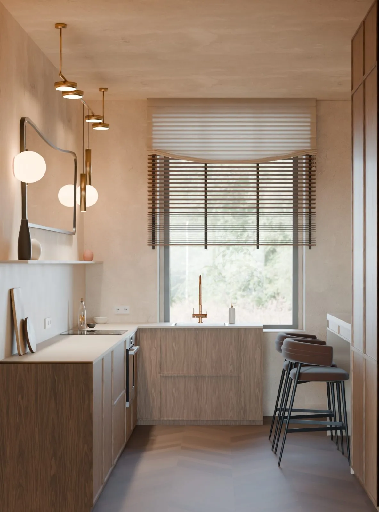
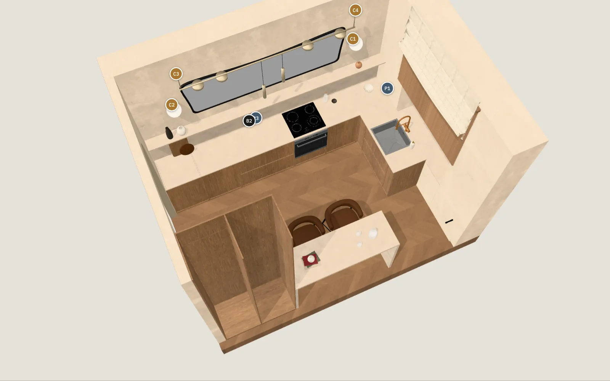
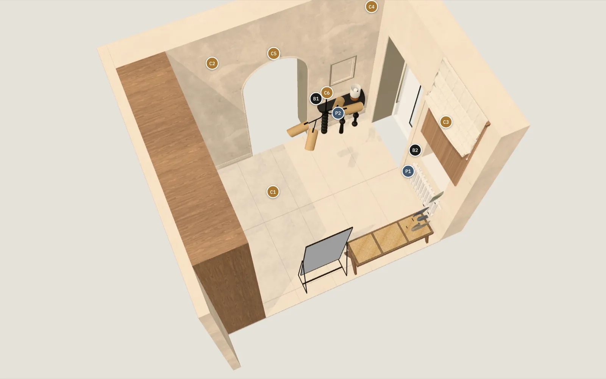
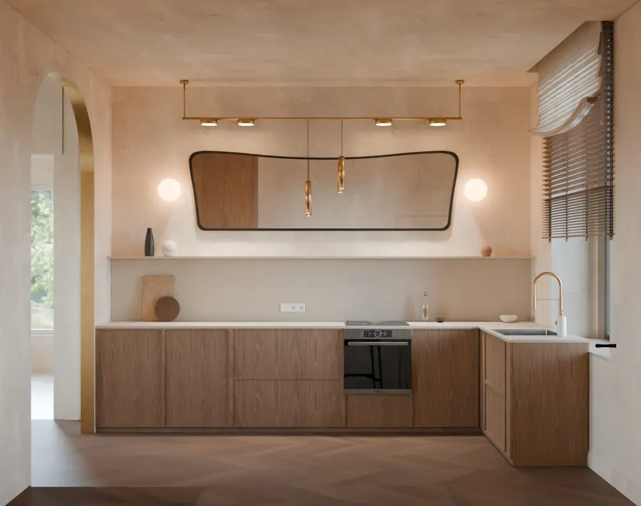
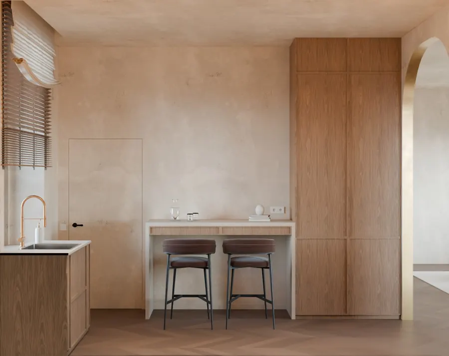
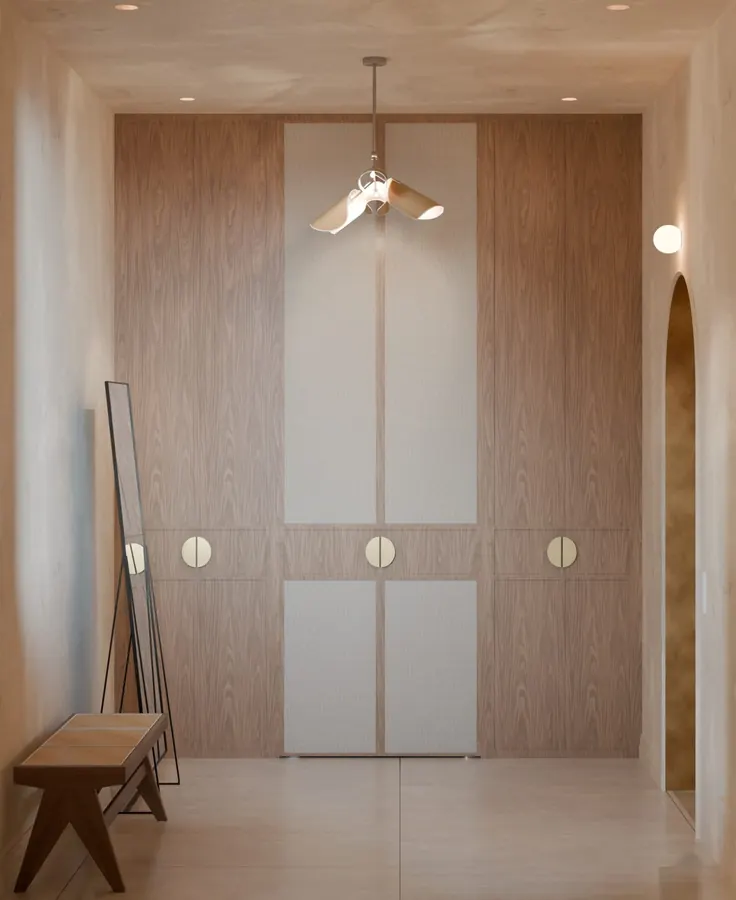
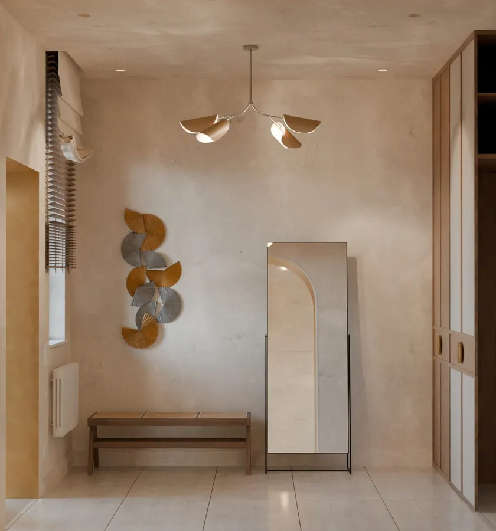
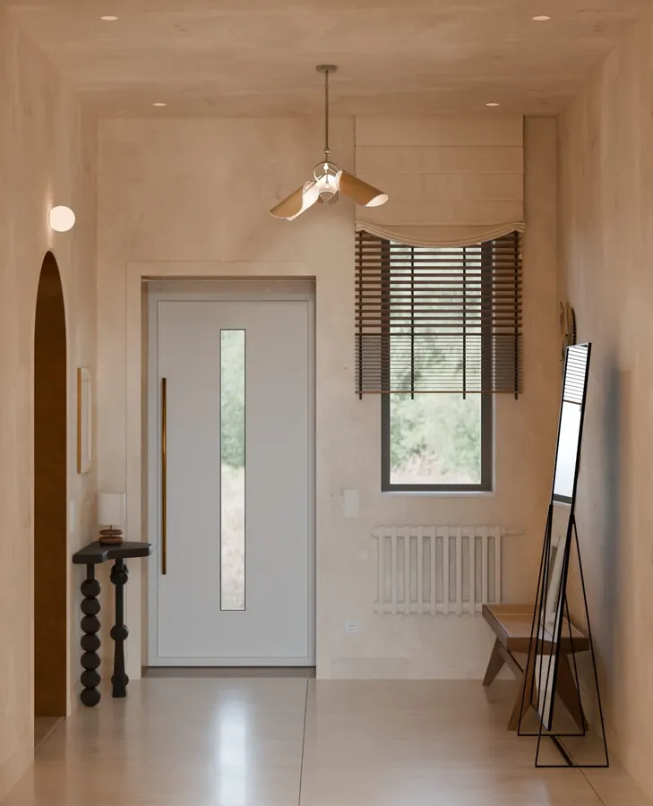
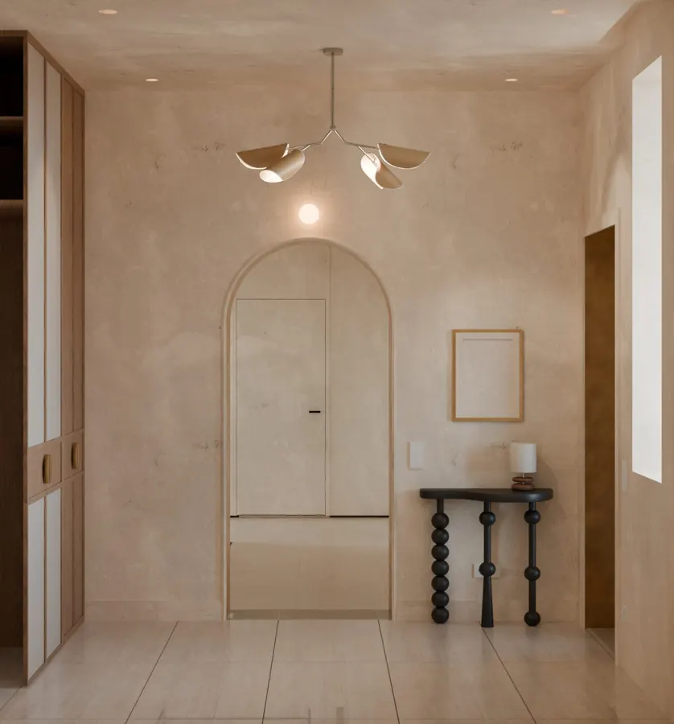

Мальцево · кухня и прихожая · ноябрь 2026
WABI-
SABI
Ваби-саби — красота несовершенного: известковая штукатурка с живой фактурой, дерево с открытой текстурой, латунь, которая темнеет со временем. Ничего глянцевого и ничего лишнего.
Здесь обе комнаты в 3D. Их можно покрутить, снять и вернуть потолок и посмотреть, где будут розетки, выключатели и выводы под свет. Ниже — визуализации.

Кухня
Тёплая известковая штукатурка, фасады из шпона дуба, столешница из акрилового камня и пол «ёлочкой». Латунь — смеситель, подвесная система над столешницей и тонкая кромка арки — со временем потемнеет и станет только красивее.

Крутите мышью или пальцем · приблизить: щелчок по модели и колесо, на телефоне — два пальца
Нажмите на метку на модели или на строку в таблице
Выводы электрики · кухня
| Метка | Что | Где | Высота, мм | Шт. |
|---|---|---|---|---|
| Р1 | Розетка двойная | стена с окном | 1 080 | 2 |
| Р2 | Розетка двойная | барная стойка | 1 210 | 2 |
| Р3 | Розетка двойная | стена с мойкой и зеркалом | 1 080 | 2 |
| В1 | Выключатель | барная стойка | 1 000 | 1 |
| В2 | Выключатель | стена с мойкой и зеркалом | 1 080 | 1 |
| С1 | Вывод под бра | стена с мойкой и зеркалом | 2 200 | 1 |
| С2 | Вывод под бра | стена с мойкой и зеркалом | 2 200 | 1 |
| С3 | Вывод под подвесную систему | потолок | — | 1 |
| С4 | Вывод под подвесную систему | потолок | — | 1 |
Высота — от чистового пола до центра вывода. Данные сняты с 3D-модели; перед монтажом сверяйте с электропроектом.
Прихожая
Та же штукатурка, что на кухне, светлый тёплый керамогранит на полу, шкаф во всю стену со шпоном дуба. Двери в коридор — скрытого монтажа, в цвет стены. Над аркой — бра, в потолке — четыре точечных светильника и люстра.

Крутите мышью или пальцем · приблизить: щелчок по модели и колесо, на телефоне — два пальца
Нажмите на метку на модели или на строку в таблице
Выводы электрики · прихожая
| Метка | Что | Где | Высота, мм | Шт. |
|---|---|---|---|---|
| Р1 | Розетка | стена с входной дверью | 300 | 1 |
| Р2 | Розетка двойная | арка в кухню | 300 | 2 |
| В1 | Блок из двух выключателей | арка в кухню | 1 000 | 2 |
| В2 | Блок из двух выключателей | стена с входной дверью | 1 000 | 2 |
| С1 | Точечный светильник | потолок | — | 1 |
| С2 | Точечный светильник | потолок | — | 1 |
| С3 | Точечный светильник | потолок | — | 1 |
| С4 | Точечный светильник | потолок | — | 1 |
| С5 | Вывод под бра над аркой | арка в кухню | 2 450 | 1 |
| С6 | Вывод под люстру | потолок | — | 1 |
Высота — от чистового пола до центра вывода. Данные сняты с 3D-модели; перед монтажом сверяйте с электропроектом.
Визуализации
Кухня





Прихожая







